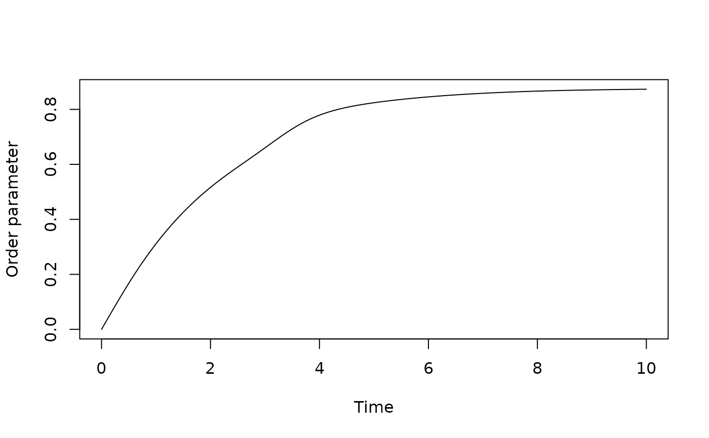

Simulates the classical all-to-all Kuramoto phase-oscillator model with a fixed-step fourth-order Runge-Kutta integrator. The R implementation is the reference specification; use simulate_kuramoto_cpp() for the matching C++ fast path.
Usage
simulate_kuramoto(
t_max = 50,
dt = 0.05,
n = 32L,
coupling = 1,
omega = NULL,
theta0 = NULL,
transient = 0
)
simulate_kuramoto_cpp(
t_max = 50,
dt = 0.05,
n = 32L,
coupling = 1,
omega = NULL,
theta0 = NULL,
transient = 0
)Arguments
- t_max
Numeric. Simulation time retained after the transient.
- dt
Numeric. Integration step size.
- n
Integer. Number of oscillators. Must be at least 2.
- coupling
Numeric. Global coupling strength K. Positive values are attractive and negative values are repulsive.
- omega
NULL, a numeric scalar, or a numeric vector of length n. Natural frequencies. A scalar is replicated.
- theta0
NULL, a numeric scalar, or a numeric vector of length n. Initial phases in radians. A scalar is replicated.
- transient
Numeric. Initial simulation time to discard.
Value
An object of class kuramoto_simulation, a list containing:
- t
Numeric vector of retained times.
- theta
Numeric matrix of unwrapped phases, one oscillator per column.
- order_parameter
Kuramoto synchronization magnitude in [0, 1].
- omega
Natural frequencies used in the simulation.
- coupling
Coupling strength.
- dt
Integration step size.
Details
The model is $$\dot{\theta}_i = \omega_i + \frac{K}{N}\sum_{j=1}^{N}\sin(\theta_j-\theta_i).$$
The coupling term is evaluated in linear time using the complex order parameter identity $$\frac{1}{N}\sum_j \sin(\theta_j-\theta_i) = S\cos(\theta_i) - C\sin(\theta_i),$$ where \(C = N^{-1}\sum_j\cos(\theta_j)\) and \(S = N^{-1}\sum_j\sin(\theta_j)\). This avoids an explicit \(O(N^2)\) pairwise-coupling loop.
If omega is NULL, natural frequencies are deterministically spaced on [-1, 1]. If theta0 is NULL, initial phases are evenly distributed on [0, 2*pi). Returned phases are unwrapped.
References
Kuramoto, Y. (1975). Self-entrainment of a population of coupled nonlinear oscillators. In H. Araki (Ed.), International Symposium on Mathematical Problems in Theoretical Physics, Lecture Notes in Physics 39, 420-422.
Strogatz, S. H. (2000). From Kuramoto to Crawford: exploring the onset of synchronization in populations of coupled oscillators. Physica D, 143, 1-20.
Examples
sim <- simulate_kuramoto(
t_max = 10,
dt = 0.05,
n = 16,
coupling = 1.5
)
plot(sim$t, sim$order_parameter, type = "l",
xlab = "Time", ylab = "Order parameter")
